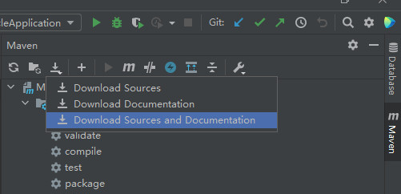
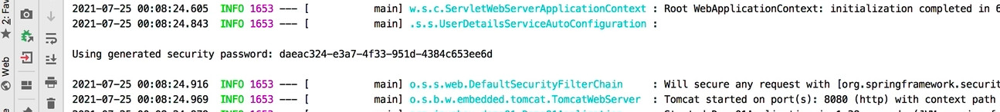
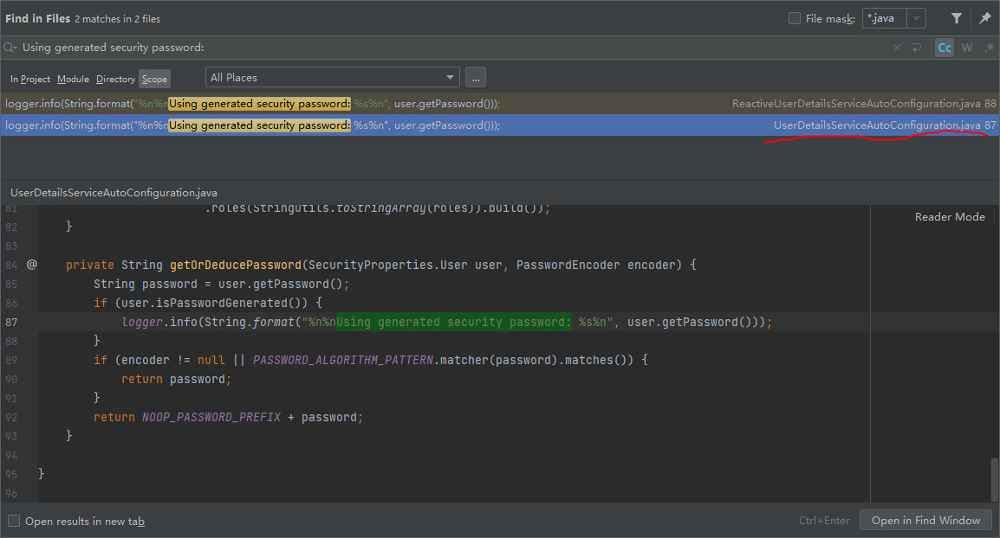
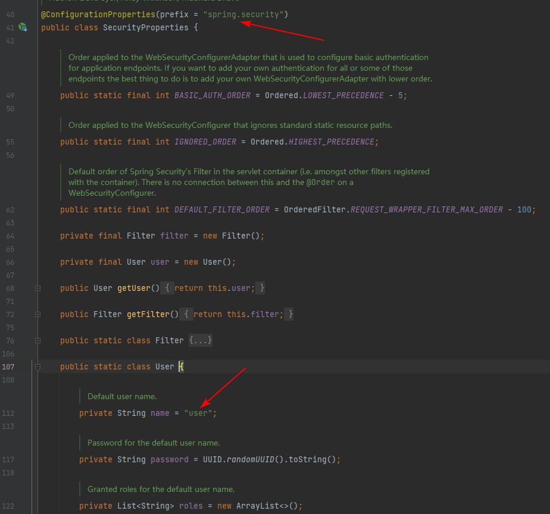
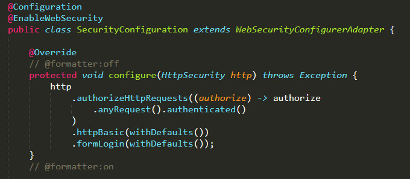
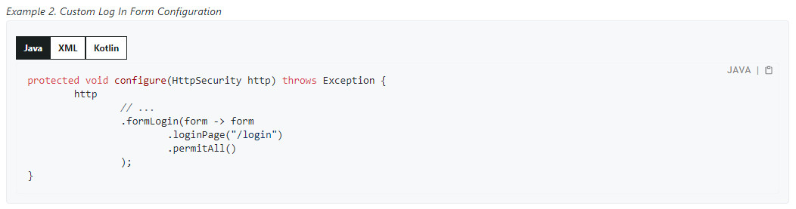

这是《把SpringSecurity玩明白》的第一篇，从项目初始化到更换定制度的登录页。不要忘了初心，尽可能为每一个点都找到坚实的“依据”。
在 start.spring.io 上初始化项目，加入web、security、thymeleaf(手搓前端页面)，然后就开始吧。
依赖 pom.xml
看下pom文件，确保里面有这三项1
2
3
4
5
6
7
8
9
10
11
12<dependency>
<groupId>org.springframework.boot</groupId>
<artifactId>spring-boot-starter-security</artifactId>
</dependency>
<dependency>
<groupId>org.springframework.boot</groupId>
<artifactId>spring-boot-starter-web</artifactId>
</dependency>
<dependency>
<groupId>org.springframework.boot</groupId>
<artifactId>spring-boot-starter-thymeleaf</artifactId>
</dependency>
用idea打开项目之后，点一下 Download Sources and Documentation，方便以后全局搜源码。

应用配置文件 application.yml
初始化一个用户：sean/1231
2
3
4
5
6
7
8spring:
application:
name: muscle
security:
user:
name: sean
password: 123
是怎么知道的有spring.security.user.name这样的变量？什么配置也不做，直接启动时控制台会打印出一句话 Using generated security password:

全局搜索，找到 UserDetailsServiceAutoConfiguration 这个文件

打开这个文件，在里面找到SecurityProperties，并跳去它的源码，见它有个@ConfigurationProperties(prefix = “spring.security”)注解，说明是springboot自动配置用到的属性，并且内部定义的静态类User有name、password、roles等成员，这样才知道可以在application.yml里配置name和password。顺便也能发现不配置的话默认用户名是“user”

security配置文件
去GitHub上搜索spring-security-samples这个库，在其README页面有一个链接 Hello Security with Explicit Configuration - Spring Boot, 这里面的SecurityConfiguration.java是默认配置的显式描述

再结合 文档 上给出的提示

做出自己的 MySecurityConfig.java，将登录页指定为 /loginpage（此处同时将登陆接口指定为了 POST /loginpage）
1 | @EnableWebSecurity |
控制器及页面
用的Thymeleaf，所以控制器只要返回视图名字符串。视图放在 src/main/resources/templates/ 下面
IndexController
1 | @Controller |
loginpage.html
1 | <!DOCTYPE html> |
frontpage.html
1 | 随便什么内容，对应根地址 http://localhost:8080/ |
最终效果
- 输入 http://localhost:8080/ 回车，因为未登录过所以会
- 跳到 http://localhost:8080/loginpage 自定义的登录表单页，填上 sean、123 登录成功后
- 会自动跳回 http://localhost:8080/, 能看到 frontpage.html 里的内容